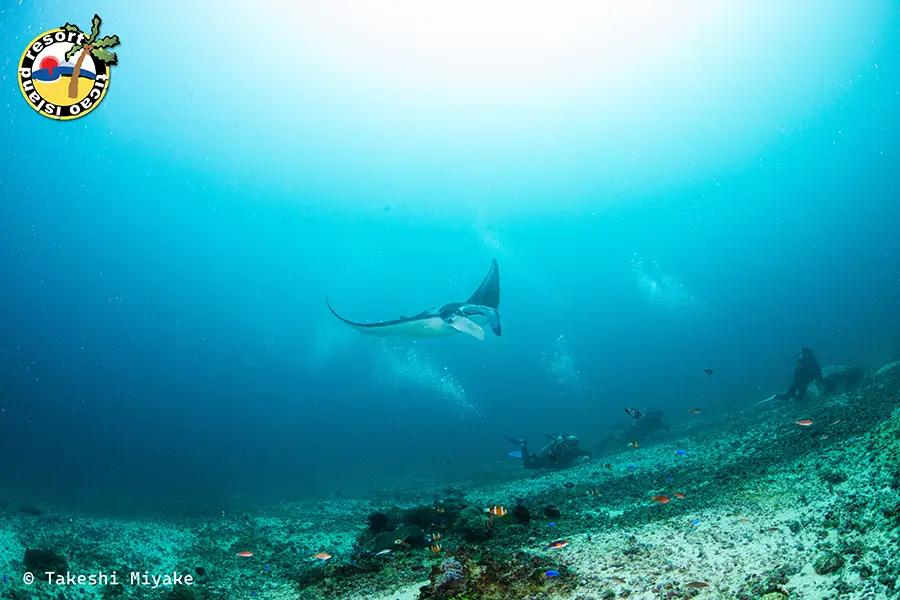
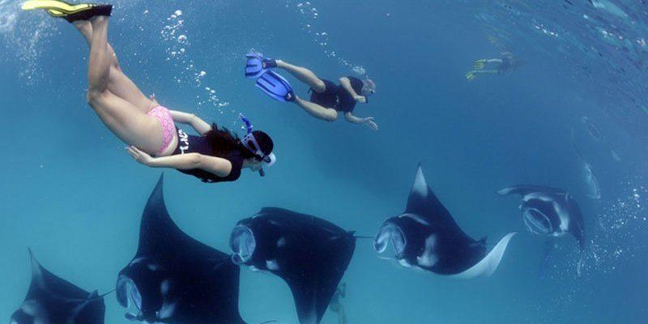

Manta Bowl Shoal is a world-famous diving site located near Ticao Island in Masbate. It is best known for its majestic manta rays, which can often be seen swimming gracefully underwater. This makes it a top destination for divers and marine life enthusiasts. The area is rich in biodiversity, with various species of fish and other marine creatures. Diving in Manta Bowl offers an unforgettable experience, especially for those who love underwater adventures. With its unique marine ecosystem, it is considered one of the best dive spots in the Philippines.